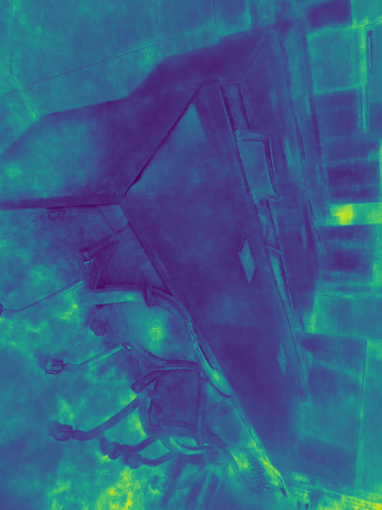

Pipeline of Non-Glare-NeRF: (a): Extract Instant NGP (NeRF) model results. (b): Extract the result of Instant NGP (NeRF) model with pre-processing. Pre-processing includes the process of detecting glare areas and applying interpainting.
Visualization: Here are examples of HuGS on different scenes (datasets). More results can be found in the paper and the data.
(1) Input RGB
(2) Input Depth
(3) Glare Mask
(4) Inpainting
(5) Result RGB
(6) Result Depth
